1982
Due fratelli, un bar
Pino e Gianni ereditano dai genitori un bar anni '60 in via Rombò e si improvvisano birraioli. Via i biliardi e le bocce: arrivano tavoloni, panche e patatine fritte.
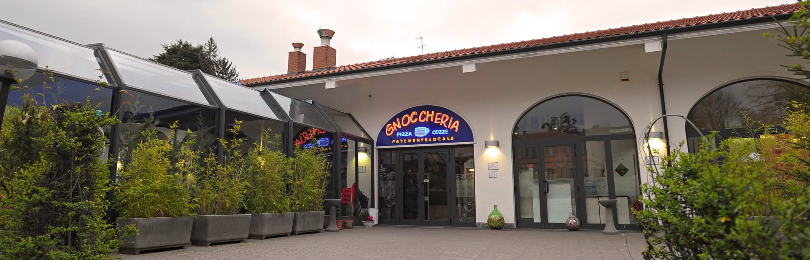
Gnoccheria · Pizzeria · Birreria — Rivoli, dal 1982
Gnocchi fatti a mano e serviti fumanti in padella, pizza al tegamino o sottilissima, cozze in tredici ricette. E la birra, da noi, si beve nel vasino da notte.
La specialità
Non chiedeteci dove li abbiamo comprati: li facciamo a mano, uno dopo l'altro. Ne prepariamo 200 kg a settimana, perché non ci piacciono le porzioni striminzite.
Arrivano in tavola fumanti, nella loro padella, e il condimento lo scegliete voi tra più di trenta.
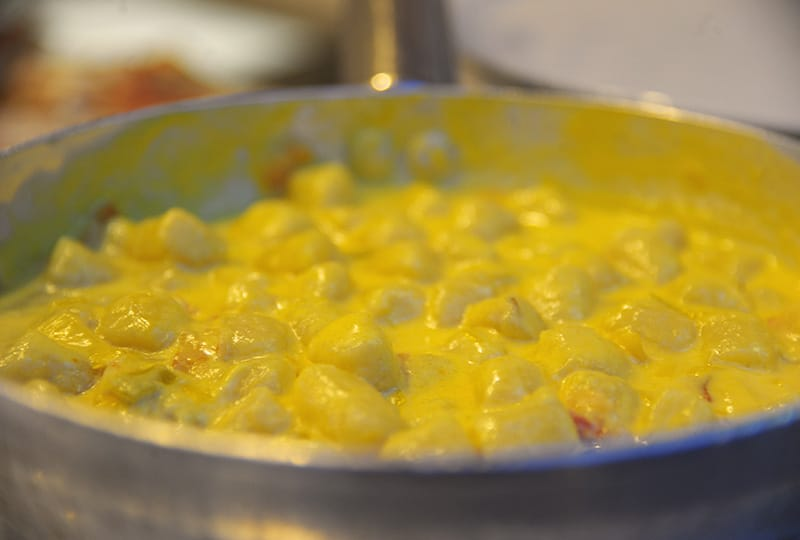
…e poi Ciao papà, gratinati ai formaggi, Reds, salmone al pepe rosa, amatriciana e tutti gli altri.
Il simbolo
Torino conta centinaia di birrerie: perché venire fino a Rivoli? Per una trovata che nessuno dimentica. Birra e bibite, da noi, si servono in recipienti di ceramica a forma di vasino da notte. È da lì che viene il nome.
«Non chiedete un bicchiere di vetro. Piuttosto bevete dalla bottiglia, ma rispettate questa tradizione.»
Birra artigianale n° 99, prodotta con Pasturana: chiara strong, doppio malto, 6,5% vol., rifermentata in bottiglia, non filtrata e non pastorizzata.
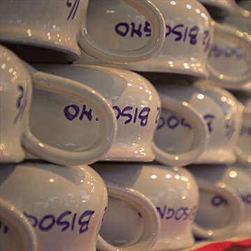
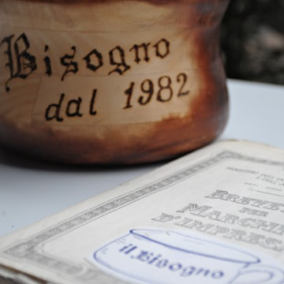
Pizzeria e cucina
Siamo una gnoccheria, ma anche un ristorante e una pizzeria: quattro cuochi e due pizzaioli preparano tutto sul momento.
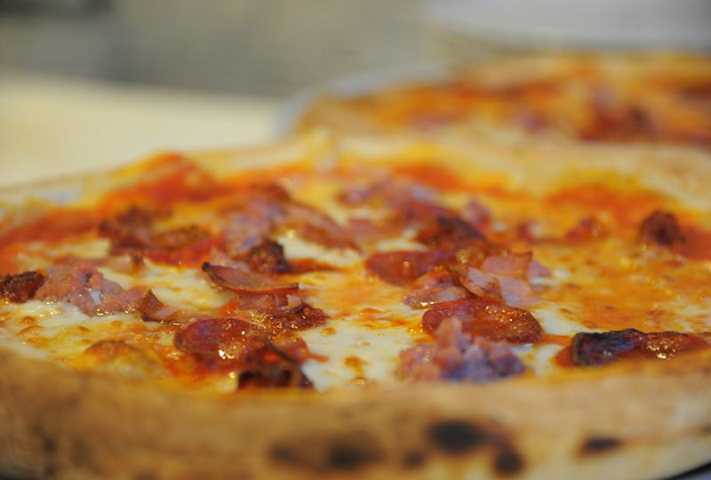
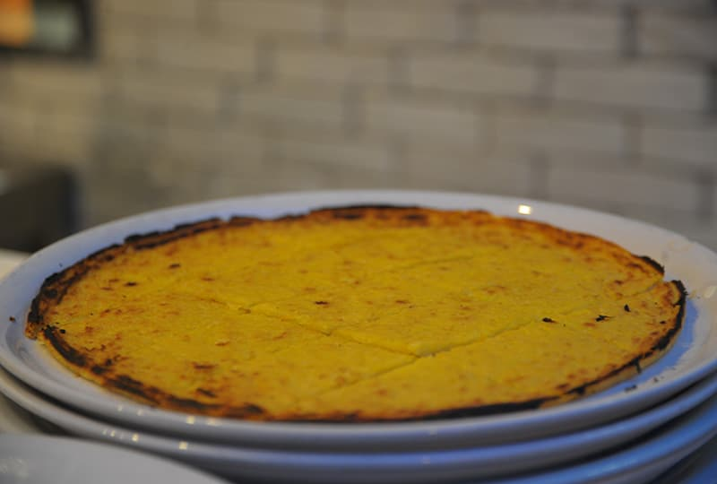
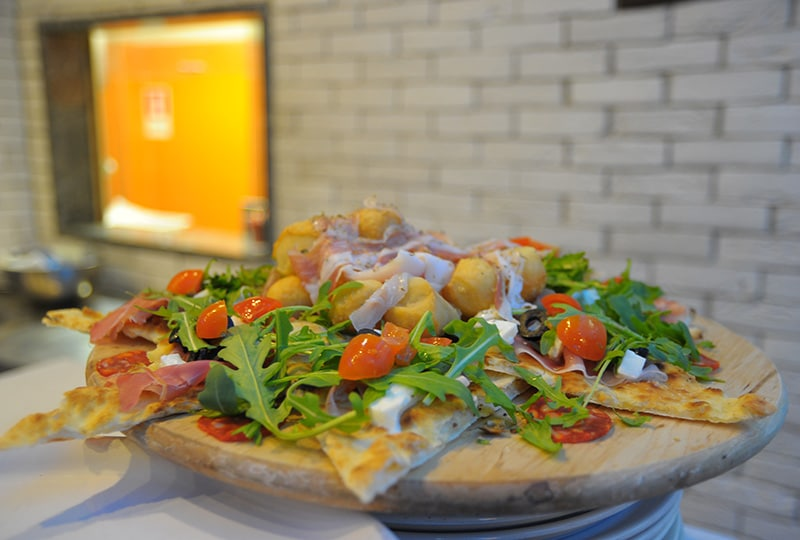
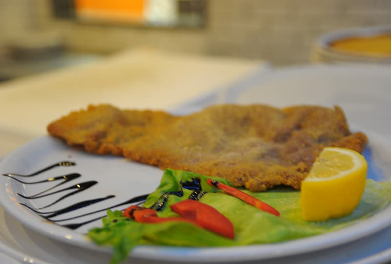
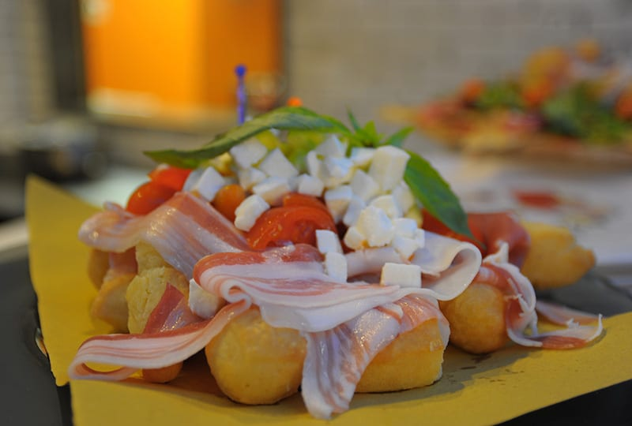
← scorri →
La storia
Dalla vecchia piola di famiglia alla gnoccheria di via Primo Maggio, con un solo filo conduttore: il bisogno, e il vasino da notte.
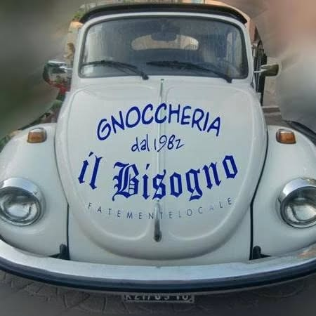
Pino e Gianni ereditano dai genitori un bar anni '60 in via Rombò e si improvvisano birraioli. Via i biliardi e le bocce: arrivano tavoloni, panche e patatine fritte.
Un grande dehors sotto un glicine maestoso, la luce delle candele, il pianoforte. E l'idea che dà il nome al locale: servire la birra nel vasino da notte.
“Proviamo”, dicono i due fratelli.
Un'operazione immobiliare si prende via Rombò: Il Bisogno passa in corso Susa e diventa anche pizzeria.
Un locale più grande, tante novità, tanti clienti. I ragazzi di allora ricordano ancora le carbonare di mamma Carmela e la simpatia di papà Nicola.
Squadra che vince non si cambia.
Dove siamo
Per orari e prenotazioni la via più rapida è una telefonata. Il dehors con i gagliardetti vi aspetta.
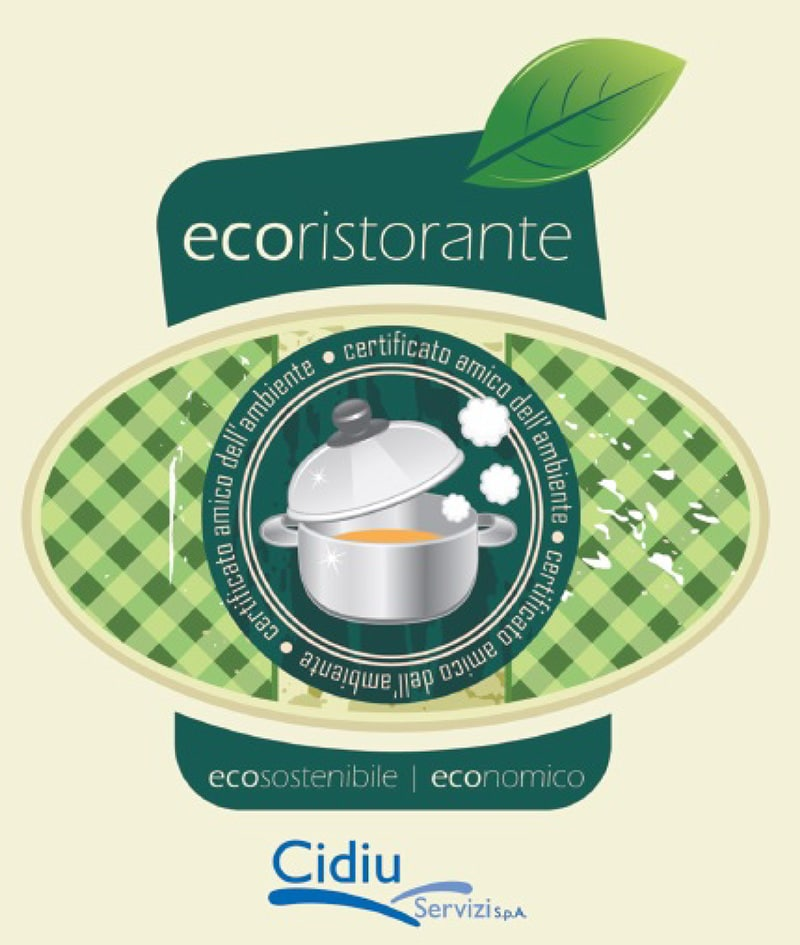
Ecoristorante certificato Cidiugrazie, e alla prossima!